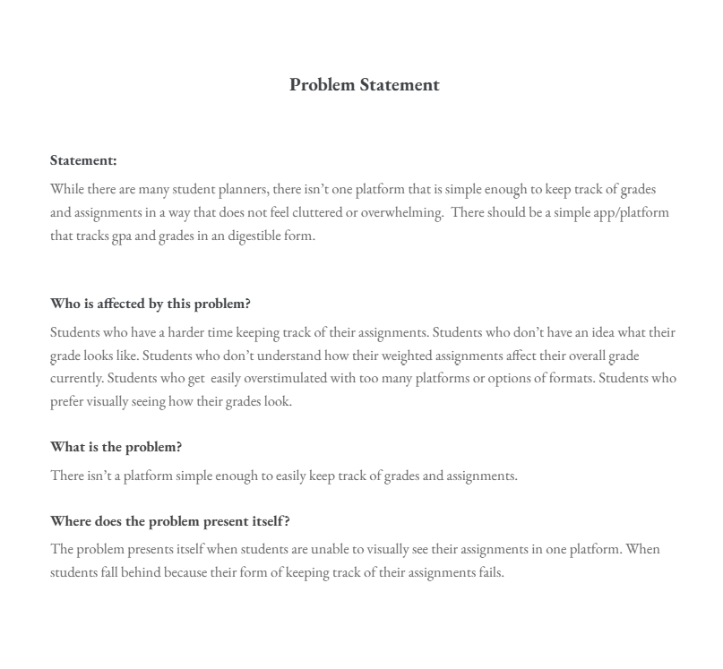

Problem Statement
While there are many online and physical student planners, there isn’t one platform that is simple enough to keep track of grades and assignments in a way that does not feel cluttered or overwhelming.
Affinity Diagram

The diagram shown displays the things I wanted to focus on and take into account when planning the app.
Sketches
The sketches above demonstate the simplicity of the application. The circle diagram shows how the gpa calculator would be calculated and visualized.
CSCE 145 Java Code
Example Java code that I worked on for CSCE 145.